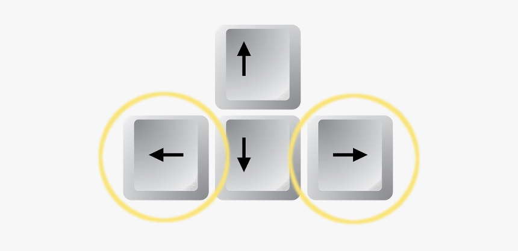
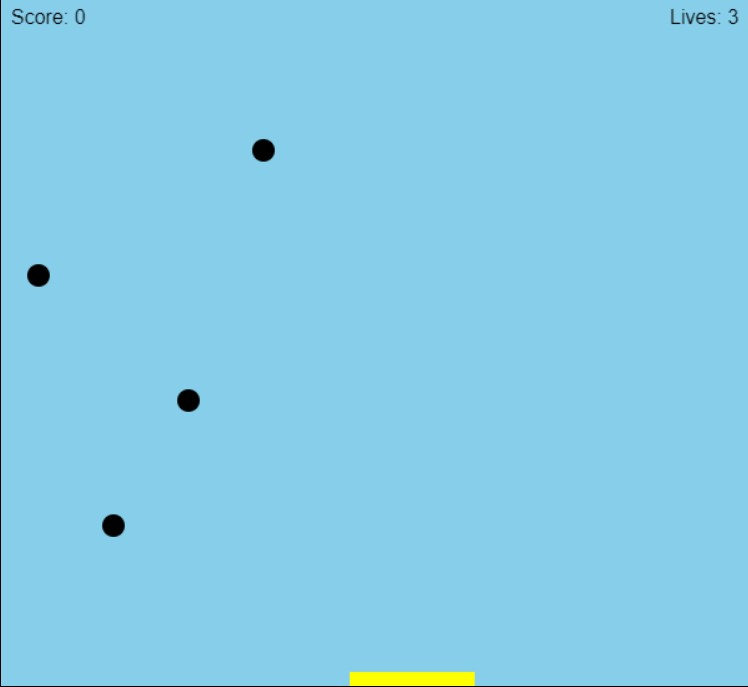

Instructions For Ball Out
- This Ball out game is very simple and easy to understand!
- The game involves moving a paddle left to right and the main goal of the game is to try and catch as many balls as possible
- Each time a ball is caught the score is incremented by one
- Each ball is worth one point
- The user has 3 lives
- Each time a live is lost the game speeds up, meaning the rate at which a ball falls will increase
Controls
Moving the paddle:
- The user can move the paddle using the left and right arrow keys on the keyboard

- Optionally the user can move the paddle using the mouse by moving the mouse towards the left and right sides of the screen to move the paddle
